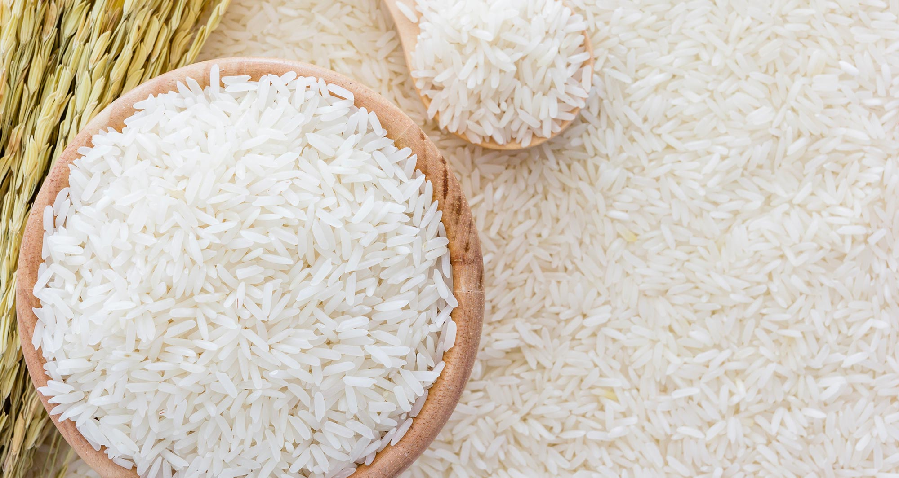
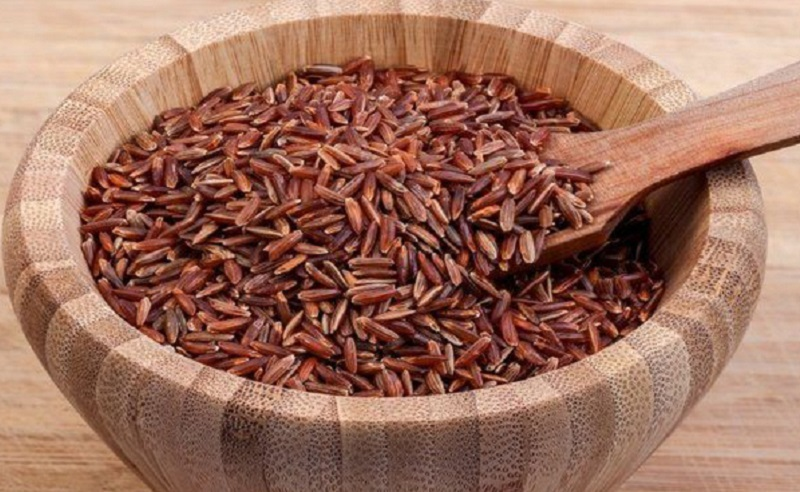
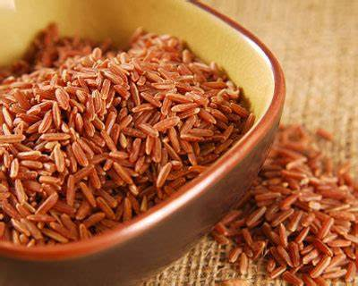
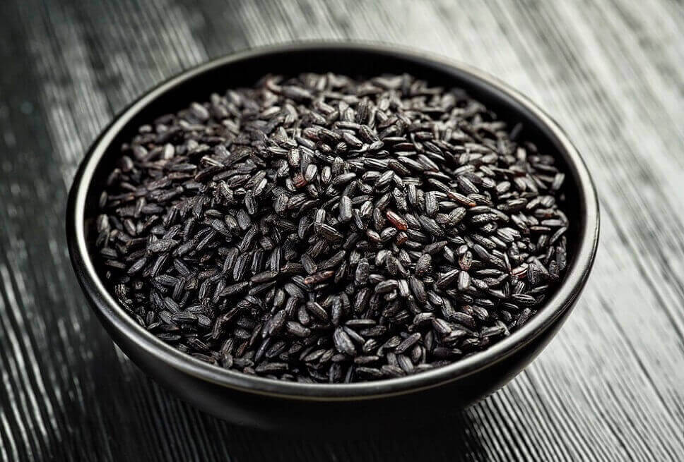

1. Beras Putih (Oryza sativa L.)
Manfaat:
-Harga terjangkau
-Lapisan kulit sudah dibuang
2. Beras Merah (Oryza rufipogon)
Manfaat:
-Alternatif beras putih
-Bagus untuk diet(Kandungan glukosa yang sedikit)
-Mengandung protein,serat,zat besi dan vitamin D
3. Beras Cokelat
Manfaat:
-Pilihan penderita diabetes & sakit jantung
-Mampu menurunkan kolestrol dan gula darah
4. Beras Hitam (Oryza Sativa L. Indica)
Manfaat:
-Memiliki gizi yang tinggi
-Kaya serat dan antioksidan